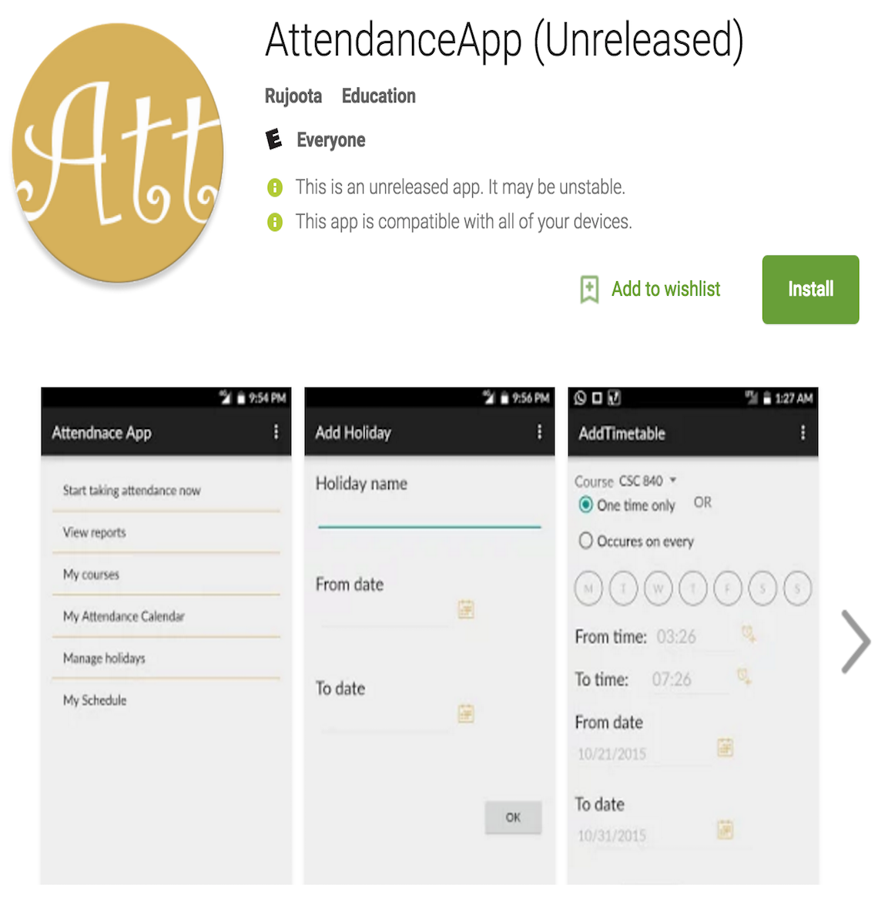

This app is built in Android which lets facilitator take attendance for students or
attendees. Both facilitator and attendees will install this app. Facilitator can set up
lectures according to their timetable in their app. To make the initial setup easy,
facilitator can directly import file from their mobile.(Here is the
format:https://github.com/rujoota/CSC780_Attendance/blob/master/students.txt)
Facilitator can scan NFC tag first which allows some data relavant to current lecture
transferred to the tag and then students can fill attendance by just scanning these tags
with their mobile. Facilitator can view and export the reports about the students.
Students can only view their report.
MySQL database for this app is hosted at Amazone Cloud. Data retrieval is done by simple
php pages. Basic database schema and requirements are
here.
View initial screen design
here
Some features of Android which this app uses
- Recycler view
- Remotely hosted API utilization for connecting to database on cloud
- Customized color-coded calendar
- File import-export from phone
- Common branding and coloring
- Checkbox drawable state selectors
- NFC communication with custom mime-type
If you want to try this app, you need to do followin data setup:
- Create an account as facilitator and login
- Have attendees install this app and let them create their accounts.
- Add few courses
- Upload attendees in those courses(You need to have file manager for this. Sample file
- Add a new schedule from My Schedule
- Try taking attendance from 'Start taking attendance now' and scan NFC
- Attendees should scan the same NFC tag - they don't need to open the app(they should
have logged in before)
- After all attendees are done, facilitator hits refresh button and then saves the
attendance.
- Facilitator can also view past classes in which attendance is not filled by going
through My Attendance Calendar and fill that attendance as well.
- Facilitator can also view and export attendance report for all attendees for all
courses, attendees can only view their report.